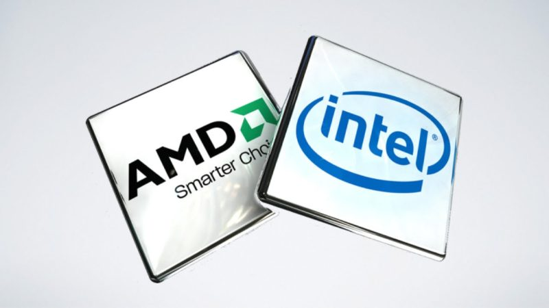
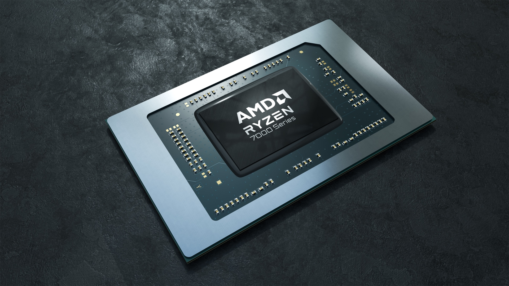
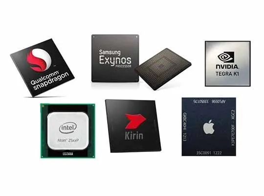
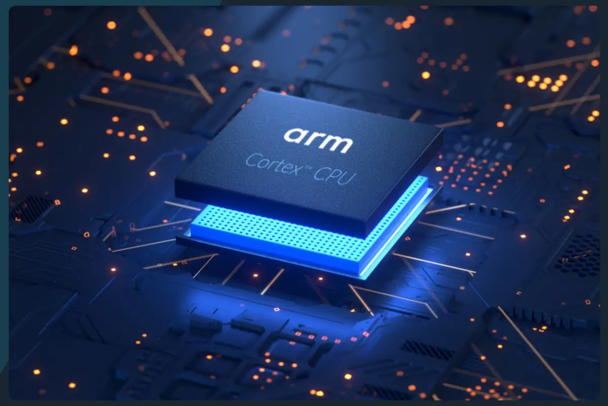
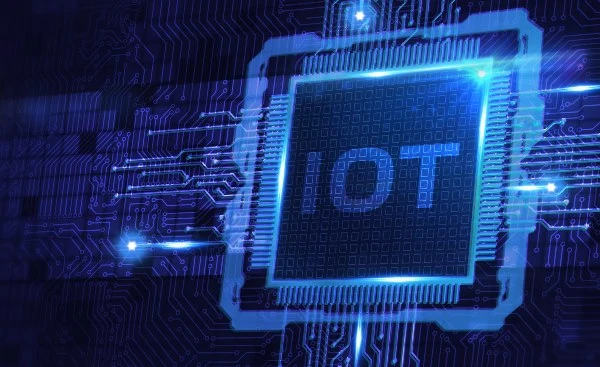

Welcome to the World of CPUs
Central Processing Unit (CPU) is the brain of any computing device, which controls and executes the instructions of a program. In this section, we will explore the different types of CPUs and their features.
Types of CPU
Central Processing Units (CPUs) are the primary processing units in most computer systems and come in different types and architectures depending on their intended use and specific use cases, such as desktops, laptops, mobile devices, AI, and IoT. Each type of CPU is optimized for specific performance, power consumption, and cost requirements, making them suitable for different applications and computing environments.
Types:
Desktop:
Desktop CPUs are capable of demanding applications like gaming, video editing and scientific simulations. They generally consist of more cores, larger cache sizes and higher clock speeds compare to other CPUs.
Laptop:
Laptop and ultrabooks CPU focus more on energy-efficient to extend battery life and reduces heat buildup due to the nature of laptop. Laptop CPUs usually consist of fewer cores than desktop CPUs and lower clock speeds, but lower power consumption and heat generation.
Mobile:
Mobile CPUs are also used for tablets, they are optimized for low power consumption and small forms factors. They usually have lower clock speeds and fewer cores than desktops and laptop CPUs. But they are effective at web browsing, social media, and video playback.
AI:
AI CPUs are specifically designed for use in artificial intelligence and machine learning applications. They typically have specialized processing units such as neural network accelerators and tensor processing units, which enable them to perform complex calculations required by AI and ML algorithms.
Internet if Things (IoT):
These CPUs are designed for use in IoT devices, such as sensors, smart home devices, and wearables. They are highly energy-efficient, have low power consumption, and are optimized for low-cost and low-complexity applications.